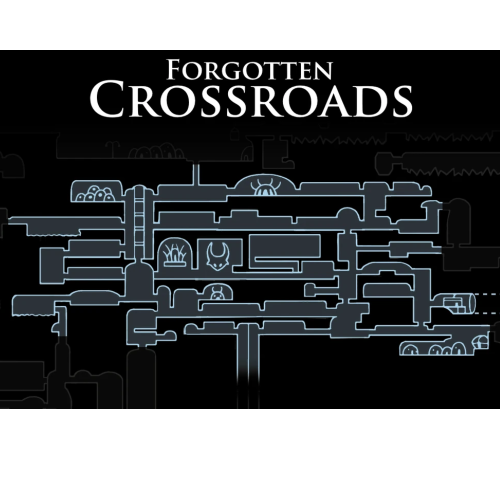
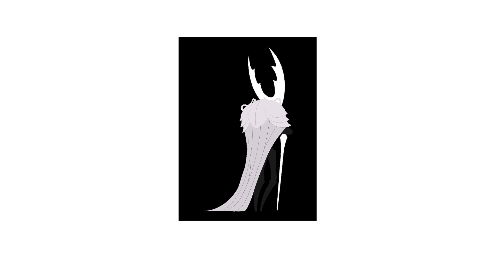

forgotten crossroads
Localizada logo abaixo da superfície, a Encruzilhada Esquecida consiste em muitas
cavernas e estradas. Restos fossilizados de insetos cobrem a superfície das cavernas, com samambaias
claras crescendo através de rachaduras no solo.
"Ainda serpenteando por essas belas rodovias? Imagine como elas deviam ser no auge do reino, cheias de trânsito e cheias de vida!" — Cornifer

